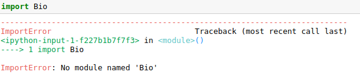
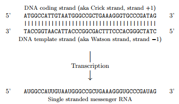
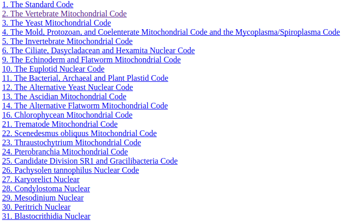
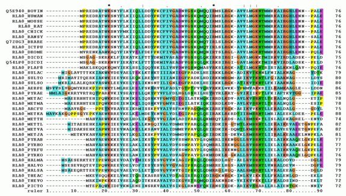
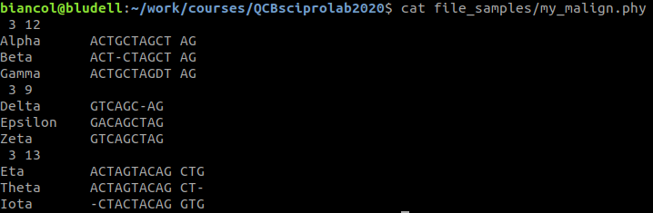

Module 1, Practical 10¶
In this practical we will get acquainted with Biopython.
Biopython¶
From the Biopython tutorial: The Biopython Project is an international association of developers of freely available Python tools for computational molecular biology.
The goal of Biopython is to make it as easy as possible to use Python for bioinformatics by creating high-quality, reusable modules and classes. Biopython features include parsers for various Bioinformatics file formats (FASTA, FASTQ, BLAST, PDB, Clustalw, Genbank,…), access to online services (NCBI, Expasy,…), interfaces to common and not-so-common programs (Clustalw, DSSP, MSMS…), a standard sequence class, various clustering modules, a KD tree data structure etc. and even some documentation :-).
In this practical we will see some features of Biopython but please refer to biopython documentation to discover all its features, recipes etc.
These notes are largely based on the tutorial that is available here.
Installation of Biopython¶
To test if Biopython is installed in your system you can import the library with:
import Bio
if the execution gives:
Biopython needs to be installed.
In windows installing Biopython should be as easy as opening the command prompt as admininstrator (typing cmd and then right clicking on the link choosing run as admininstrator) and then pip3 install biopython. If that does not work, you should be able to install biopython with the following: python3.xx -m pip install biopython (where you should change python3.xx with the path to your python3.xx executable).
In linux sudo pip3 install biopython will install biopython for python3 up to python3.5. On python 3.6 and later the command is: python3.6 -m pip install biopython or, more in general, pythonX.X -m pip install biopython.
Detailed installation instructions can be found here.
General overview¶
Biopython provides the capability of parsing standard bioinformatics formats into python usable data structures. Some of the supported tools and formats are:
Blast output – both from standalone and WWW Blast
Clustalw
FASTA
GenBank
PubMed and Medline
ExPASy files, like Enzyme and Prosite
SCOP, including ‘dom’ and ‘lin’ files
UniGene
SwissProt
among the others. In particular it provides a sequence class to perform the most common operations on sequences, parsing of alignments, clustering etc. and it can quickly connect to the most popular databases to download data or parse information on the fly.
Sequence objects¶
Biopython has a specific object Seq to deal with biological sequences which is a lot more powerful than the str object of python when it comes to manage biological data. The object Seq has methods like translate() and reverse_complement() which are very handy.
As in the case of python’s str objects, the object Seq is immutable. The mutable version is MutableSeq.
All the information on Seq objects can be found here.
[1]:
from Bio.Seq import Seq
s = Seq("GATTACATAATA")
dna_seq = Seq("GATTATACGTAC")
print("S:", s)
print("dna_seq:", dna_seq)
my_prot = Seq("MGNAAAAKKGSEQE")
print("my_prot:", my_prot)
S: GATTACATAATA
dna_seq: GATTATACGTAC
my_prot: MGNAAAAKKGSEQE
Looping, slicing and concatenation¶
Note also that Seq objects behave like strings, and the consistency of the alphabet (i.e. if the sequence is DNA, RNA, aminoacid sequence…) is not checked anymore in the latest version. We can concatenate a sequence of DNA with that of aminoacids…
[2]:
from Bio.Seq import Seq
dna_seq = Seq("GATTATACGTAC")
my_prot = Seq("MGNAAAAKKGSEQE")
#Does it really make sense though?!?
print(dna_seq + my_prot)
GATTATACGTACMGNAAAAKKGSEQE
We can also loop through the elements and slice strings with the usual [S:E:step] operator (and as usual S is included, E is excluded). It is also possible to convert a Seq object into a string.
[3]:
from Bio.Seq import Seq
dna_seq = Seq("GATTATACGTACGGCTA")
for base in dna_seq:
print(base, end = " ")
print("")
sub_seq = dna_seq[4:10]
print(sub_seq)
#Let's reverse the string:
print("Reversed: ", dna_seq[::-1])
#from Seq to string:
dna_str = str(dna_seq)
print("As string:", dna_str)
print(type(dna_str))
G A T T A T A C G T A C G G C T A
ATACGT
Reversed: ATCGGCATGCATATTAG
As string: GATTATACGTACGGCTA
<class 'str'>
The object Seq provides several methods similar to the corresponding methods of strings:
Seq.count(s): counts the number of times s appears in the sequence;Seq.upper(): makes the sequence of the object Seq upper caseSeq.lower(): makes the sequence of the object Seq lower case
Example: Let’s compute the GC content of the sequence “GATTRWWACGTACGGCTASATTACSCCGGCTA”.
[4]:
from Bio.Seq import Seq
from Bio.SeqUtils import GC
dna_seq = Seq("GATTRWWACGTACGGCTASATTACSCCGGCTA")
gc = (dna_seq.count("G") + dna_seq.count("C"))/len(dna_seq)
print("GC % is {:.2f}".format(100*gc))
correct_gc = GC(dna_seq)
print("GC % is {:.2f}".format(correct_gc))
print("original:", dna_seq)
print("lower_case:",dna_seq.lower())
GC % is 40.62
GC % is 46.88
original: GATTRWWACGTACGGCTASATTACSCCGGCTA
lower_case: gattrwwacgtacggctasattacsccggcta
The difference in the results goes down to the fact that Biopython’s GC method takes into account ambiguous nucleotides like (S which stands for C or G ref iupac). This is a method provided in the SeqUtils module (more info on all the methods here).
Complement and reverse complement¶
A usual operation on DNA strings is the reverse complement. Biopython provides two specific methods to do that:
Seq.complement()to complement the sequenceSeq.reverse_complement()to reverse complement the sequence.
[5]:
from Bio.Seq import Seq
my_seq = Seq("GATCGATGGGCCTATATAGGATCGAAAATCGC")
print("Original sequence:\t{}".format(my_seq) )
comp = my_seq.complement()
print("")
print("Complement:\t\t{}".format(comp))
print("")
revcomp = my_seq.reverse_complement()
print("Reverse complement:\t{}".format(revcomp))
Original sequence: GATCGATGGGCCTATATAGGATCGAAAATCGC
Complement: CTAGCTACCCGGATATATCCTAGCTTTTAGCG
Reverse complement: GCGATTTTCGATCCTATATAGGCCCATCGATC
Transcription and translation¶
Remember that:
[taken from the Biopython tutorial].
Biopython has a method to transcribe a DNA sequence into a mRNA sequence (and one to go back):
Seq.transcribe()that transcribes a DNA sequence into mRNA (converting Ts in Us).Seq.back_transcribe()that back-transcribes a mRNA sequence into DNA (converting Us in Ts).
Note that transcribing a protein will result in a TranslationError.
Alike, a DNA or mRNA sequence can be translated into a protein with:
Seq.translate(table=N, to_stop=True/False, stop_symbol =symbol) that converts a DNA sequence or mRNA into the corresponding protein.
Optionally, the translate method accepts a parameter table to specify the NCBI translation table used (see below for codes). to_stop makes the translation stop at the first stop codon if True (in this case the stop codon is not translated!), stop_symbol to replace the asterisk with any other stop character (Es. “@”).
 Stop codons will be represented by an asterisk.
Example: Let’s transcribe into mRNA and translate into protein the following coding sequence: ATGGCCATTGTAATGGGCCGCTGAAAGGGTGCCCGATAG.
[6]:
from Bio.Seq import Seq
coding_dna = Seq("ATGGCCATTGTAATGGGCCGCTGAAAGGGTGCCCGATAG")
print(coding_dna)
mrna = coding_dna.transcribe()
print(mrna)
print("")
print("... and back")
print(mrna.back_transcribe())
print("")
print("Translation to protein:")
prot = mrna.translate()
print(prot)
print("")
print("Up to first stop:")
print(mrna.translate(to_stop = True))
print("")
print("Mitocondrial translation: (TGA is W!)")
mit_prot = mrna.translate(table=2)
print(mit_prot)
#The following produces a translation error!
#print("RE-Translated protein: {}".format(prot.translate()))
ATGGCCATTGTAATGGGCCGCTGAAAGGGTGCCCGATAG
AUGGCCAUUGUAAUGGGCCGCUGAAAGGGUGCCCGAUAG
... and back
ATGGCCATTGTAATGGGCCGCTGAAAGGGTGCCCGATAG
Translation to protein:
MAIVMGR*KGAR*
Up to first stop:
MAIVMGR
Mitocondrial translation: (TGA is W!)
MAIVMGRWKGAR*
Translation tables can be accessed at runtime through:
[7]:
from Bio.Data import CodonTable
#equivalent to:
#standard_table = CodonTable.unambiguous_dna_by_id[1]
standard_table = CodonTable.unambiguous_dna_by_name["Standard"]
#equivalent to:
#standard_table = CodonTable.unambiguous_dna_by_id[2]
mito_table = CodonTable.unambiguous_dna_by_name["Vertebrate Mitochondrial"]
print(standard_table)
print("")
print(mito_table)
Table 1 Standard, SGC0
| T | C | A | G |
--+---------+---------+---------+---------+--
T | TTT F | TCT S | TAT Y | TGT C | T
T | TTC F | TCC S | TAC Y | TGC C | C
T | TTA L | TCA S | TAA Stop| TGA Stop| A
T | TTG L(s)| TCG S | TAG Stop| TGG W | G
--+---------+---------+---------+---------+--
C | CTT L | CCT P | CAT H | CGT R | T
C | CTC L | CCC P | CAC H | CGC R | C
C | CTA L | CCA P | CAA Q | CGA R | A
C | CTG L(s)| CCG P | CAG Q | CGG R | G
--+---------+---------+---------+---------+--
A | ATT I | ACT T | AAT N | AGT S | T
A | ATC I | ACC T | AAC N | AGC S | C
A | ATA I | ACA T | AAA K | AGA R | A
A | ATG M(s)| ACG T | AAG K | AGG R | G
--+---------+---------+---------+---------+--
G | GTT V | GCT A | GAT D | GGT G | T
G | GTC V | GCC A | GAC D | GGC G | C
G | GTA V | GCA A | GAA E | GGA G | A
G | GTG V | GCG A | GAG E | GGG G | G
--+---------+---------+---------+---------+--
Table 2 Vertebrate Mitochondrial, SGC1
| T | C | A | G |
--+---------+---------+---------+---------+--
T | TTT F | TCT S | TAT Y | TGT C | T
T | TTC F | TCC S | TAC Y | TGC C | C
T | TTA L | TCA S | TAA Stop| TGA W | A
T | TTG L | TCG S | TAG Stop| TGG W | G
--+---------+---------+---------+---------+--
C | CTT L | CCT P | CAT H | CGT R | T
C | CTC L | CCC P | CAC H | CGC R | C
C | CTA L | CCA P | CAA Q | CGA R | A
C | CTG L | CCG P | CAG Q | CGG R | G
--+---------+---------+---------+---------+--
A | ATT I(s)| ACT T | AAT N | AGT S | T
A | ATC I(s)| ACC T | AAC N | AGC S | C
A | ATA M(s)| ACA T | AAA K | AGA Stop| A
A | ATG M(s)| ACG T | AAG K | AGG Stop| G
--+---------+---------+---------+---------+--
G | GTT V | GCT A | GAT D | GGT G | T
G | GTC V | GCC A | GAC D | GGC G | C
G | GTA V | GCA A | GAA E | GGA G | A
G | GTG V(s)| GCG A | GAG E | GGG G | G
--+---------+---------+---------+---------+--
MutableSeq¶
Seq objects are immutable and therefore we cannot change their value. If we need to do so, we need to convert them into MutableSeq objects to avoid a runtime TypeError that will occur when we try to change a Seq. Seq to MutableSeq conversion can be done by:
Seq.tomutable()to convert a Seq to a MutableSeq.MutableSeq.toseq()to convert a MutableSeq to a Seq.
This will allow us to assign the value of characters within the MutableSeq with MutableSeq[ind] = newValue. Note also that methods like complement change the actual object if applied to a MutableSeq:
[8]:
from Bio.Seq import Seq
coding_dna = Seq("ATGGCCATTGTAATGGGCCGCTGAAAGGGTGCCCGATAG")
#cannot do the following because Seq is immutable
#coding_dna[10:20] = "TATATATATA"
print("Coding DNA:")
print(coding_dna)
mut_dna = coding_dna.tomutable()
print("Mutable DNA:")
print(mut_dna)
mut_dna[10:20] = "TATATATATA"
print("Mutable DNA now:")
print(mut_dna)
print("")
print("Rev comp (Seq not changed!):")
coding_dna.reverse_complement()
print(coding_dna)
print("Rev comp (MutableSeq changed!):")
mut_dna.reverse_complement()
print(mut_dna)
Coding DNA:
ATGGCCATTGTAATGGGCCGCTGAAAGGGTGCCCGATAG
Mutable DNA:
ATGGCCATTGTAATGGGCCGCTGAAAGGGTGCCCGATAG
Mutable DNA now:
ATGGCCATTGTATATATATACTGAAAGGGTGCCCGATAG
Rev comp (Seq not changed!):
ATGGCCATTGTAATGGGCCGCTGAAAGGGTGCCCGATAG
Rev comp (MutableSeq changed!):
CTATCGGGCACCCTTTCAGTATATATATACAATGGCCAT
Sequence annotation¶
Sequence records are annotations associated to sequences. In biopython there is a SeqRecord object to store this information. SeqRecord are part of the Bio.SeqRecord module which therefore needs to be imported before being used.
The SeqRecord class has the following attributes:
SeqRecord.seq: the sequence (the Seq object)SeqRecord.id: the identifier of the sequence, typically an accession numberSeqRecord.name: a “common” name or identifier sometimes identical to the accession numberSeqRecord.description: a human readable description of the sequenceSeqRecord.letter_annotations: a per letter annotation using a restricted dictionary (e.g. quality)SeqRecord.annotations: a dictionary of unstructured annotation (e.g. organism, publications,…)SeqRecord.features: a list of SeqFeature objects with more structured information (e.g. genes pos).SeqRecord.dbxrefs: a list of database cross references.
Information on SeqFeature objects can be found here.
Although you can manually create a SeqRecord, normally you will access SeqRecords populated by methods like SeqIO, here you can find how to manually create a SeqRecord.
Sequence I/O¶
The Bio.SeqIO module aims to provide a simple way to work with several different sequence file formats. Detailed information on the module can be found here.
Example:
Read a fasta file NC005816.fna containing the whole sequence for Yersinia pestis biovar Microtus str. 91001 plasmid pPCP1 and retrieve some information about the sequence.
[9]:
from Bio import SeqIO
record = SeqIO.read("file_samples/NC_005816.fna", "fasta")
print(record)
print("")
print("Sequence [first 30 bases]:")
print(record.seq[0:30])
print("")
print("The id:")
print(record.id)
print("")
print("The description:")
print(record.description)
print("")
print("The record is a: ", type(record))
ID: gi|45478711|ref|NC_005816.1|
Name: gi|45478711|ref|NC_005816.1|
Description: gi|45478711|ref|NC_005816.1| Yersinia pestis biovar Microtus str. 91001 plasmid pPCP1, complete sequence
Number of features: 0
Seq('TGTAACGAACGGTGCAATAGTGATCCACACCCAACGCCTGAAATCAGATCCAGG...CTG')
Sequence [first 30 bases]:
TGTAACGAACGGTGCAATAGTGATCCACAC
The id:
gi|45478711|ref|NC_005816.1|
The description:
gi|45478711|ref|NC_005816.1| Yersinia pestis biovar Microtus str. 91001 plasmid pPCP1, complete sequence
The record is a: <class 'Bio.SeqRecord.SeqRecord'>
WARNING: When dealing with very large or FASTQ files, the overhead of working with all these objects can make scripts too slow. In this case SimpleFastaParser and FastqGeneralIterator parsers might be better as they return just a tuple of strings for each record.
For example, to use SimpleFastaParser:
[10]:
from Bio.SeqIO.FastaIO import SimpleFastaParser
with open("file_samples/NC_005816.fna") as in_handle:
for title, seq in SimpleFastaParser(in_handle):
s = seq[0:50]+"\n"+seq[51:101]+"\n..."
print("Header:\n{}\nSequence:\n{}".format(title,s))
#Another example:
print("\n")
labels = ["1st","2nd","3rd"]
with open("file_samples/contigs82.fasta") as cont_handle:
for l in labels:
ID, seq = next(SimpleFastaParser(cont_handle))
print(l, "entry:")
print(ID, " has size ", len(seq))
print(seq[:50]+"...")
print("")
Header:
gi|45478711|ref|NC_005816.1| Yersinia pestis biovar Microtus str. 91001 plasmid pPCP1, complete sequence
Sequence:
TGTAACGAACGGTGCAATAGTGATCCACACCCAACGCCTGAAATCAGATC
AGGGGGTAATCTGCTCTCCTGATTCAGGAGAGTTTATGGTCACTTTTGAG
...
1st entry:
MDC020656.85 has size 2802
GAGGGGTTTAGTTCCTCATACTCGCAAAGCAAAGATACATAAATTTAGAA...
2nd entry:
MDC013284.379 has size 5173
TATCGTTTCCTCTGAGTAGAATATCGTTATAACAAGATTTTTTTTTTCCT...
3rd entry:
MDC018185.241 has size 23761
AAAACGAGGAAAATCCATCTTGATGAACAGGAGATGCGGAGGAAAAAAAT...
BioSeqIO.parse()¶
The method Bio.SeqIO.parse is used to parse some sequence data into a SeqRecord iterator. In particular, the basic syntax is:
SeqRecordIterator = Bio.SeqIO.parse(filename, file_format)
where filename is typically an open handle to a file and file_format is a lower case string describing the file format. Possible options include fasta, fastq-illumina, abi, ace, clustal… all the options are available here.
Example: Let’s read the first 10 entries in the .fasta file contigs82.fasta printing off the length of the sequence and the first 50 bases of each sequence followed by “…”.
[11]:
from Bio import SeqIO
cnt = 0
for seq_record in SeqIO.parse("file_samples/contigs82.fasta", "fasta"):
if(cnt == 10):
break
print("Seq {} has length {}".format(seq_record.id, len(seq_record)))
print(seq_record.seq[:50]+"...")
print("")
cnt += 1
Seq MDC020656.85 has length 2802
GAGGGGTTTAGTTCCTCATACTCGCAAAGCAAAGATACATAAATTTAGAA...
Seq MDC001115.177 has length 3118
TGAATGGTGAAAATTAGCCAGAAGATCTTCTCCACACATGACATATGCAT...
Seq MDC013284.379 has length 5173
TATCGTTTCCTCTGAGTAGAATATCGTTATAACAAGATTTTTTTTTTCCT...
Seq MDC018185.243 has length 22724
CCATTAGTGACCCCCAATGCGGATTAACCAAGCACGGTCAAGATAACCAA...
Seq MDC018185.241 has length 23761
AAAACGAGGAAAATCCATCTTGATGAACAGGAGATGCGGAGGAAAAAAAT...
Seq MDC004527.213 has length 3551
CTTGTATGTTGAAGCTTTGTGAGTGGAGCATATAGGTTGAGGTAGTGTTC...
Seq MDC003661.174 has length 3334
AGTAAGGTTGTAGAATTCAATTTCCACGGAACTCCAGCACAGCTTAGGCA...
Seq MDC012176.157 has length 2236
ATAGTCACTGACAGCCGGTGACAGTTCGACAACAATAAGTTCAGGATGTT...
Seq MDC001204.812 has length 5804
TAATGTCCGAAAAAGATGAAAATGTAGTTTGCATGAAGAAGGAGCTGTCC...
Seq MDC001204.810 has length 9798
ATGCTGCTGACATATTCCAATCGACTACACGTCACATCCGTTGCTATTAT...
Note that Bio.SeqIO.parse returns an iterator, therefore it is possible to manually fetch one SeqRecord after the other with the next(iterator) method.
Example: Let’s read the first 3 entries of the .fasta file contigs82.fasta printing off the length of the sequence and the first 50 bases of each sequence followed by “…”.
[12]:
from Bio import SeqIO
seqIterator = SeqIO.parse("file_samples/contigs82.fasta", "fasta")
labels = ["1st","2nd","3rd"]
for l in labels:
seqRec = next(seqIterator)
print(l, "entry:")
print(seqRec.id, " has size ", len(seqRec.seq))
print(seqRec.seq[:50]+"...")
print("")
1st entry:
MDC020656.85 has size 2802
GAGGGGTTTAGTTCCTCATACTCGCAAAGCAAAGATACATAAATTTAGAA...
2nd entry:
MDC001115.177 has size 3118
TGAATGGTGAAAATTAGCCAGAAGATCTTCTCCACACATGACATATGCAT...
3rd entry:
MDC013284.379 has size 5173
TATCGTTTCCTCTGAGTAGAATATCGTTATAACAAGATTTTTTTTTTCCT...
Sequences as dictionaries¶
The module Bio.SeqIO also has three different ways to allow random access to elements:
Bio.SeqIO.to_dict(file_handle/iterator): builds a dictionary of all the SeqRecords keeping them in memory and allowing modifications to the records. This potentially uses a lot of memory but is very fast;Bio.SeqIO.index(filename,file_type): builds a sort of read-only dictionary, parses the elements into SeqRecords on demand (i.e. it returns an iterator!). This method is slower, but more memory efficient;Bio.SeqIO.index_db(indexName.idx,filenames, file_format): builds a read-only dictionary, but stores ids and offsets on a SQLite3 database. It is slower but uses less memory.
The input of Bio.SeqIO.to_dict(file_handle/iterator) is a open file handler or the iterator to SeqRecords (like the output of Bio.SeqIO.parse()).
Example: Let’s read all the .fasta file contigs82.fasta in memory printing off the entry corresponding to contig “MDC019140.399”.
[13]:
from Bio import SeqIO
seqDict = SeqIO.to_dict(SeqIO.parse("file_samples/contigs82.fasta", "fasta"))
print(list(seqDict.keys())[0:5])
print("")
print("Number of sequences: ", len(seqDict))
print("")
mySeq = seqDict["MDC019140.399"]
print("Description:", mySeq.description)
print("")
print(mySeq)
['MDC020656.85', 'MDC001115.177', 'MDC013284.379', 'MDC018185.243', 'MDC018185.241']
Number of sequences: 82
Description: MDC019140.399
ID: MDC019140.399
Name: MDC019140.399
Description: MDC019140.399
Number of features: 0
Seq('GACGGGCGGGGAGGGTTTGGTTTTTTTTGGTTTTTAAAAAATTCAGGTTTNNAA...TTT')
The input of Bio.SeqIO.index(filename,file_type) is the file name to read sequences from and the file type (like fasta, genebank,…).
Example: Let’s read all the .fasta file contigs82.fasta in memory (as an index) printing off the entry corresponding to contig “MDC019140.399”.
[32]:
from Bio import SeqIO
seqDict = SeqIO.index("file_samples/contigs82.fasta", "fasta")
print("SeqDict is an iterator:")
print(seqDict.keys())
print("")
print(list(seqDict.keys()))
print("")
print("Number of sequences: ", len(seqDict))
print("")
mySeq = seqDict["MDC019140.399"]
print("Description:", mySeq.description)
print("")
print(mySeq)
SeqDict is an iterator:
KeysView(SeqIO.index('file_samples/contigs82.fasta', 'fasta', alphabet=None, key_function=None))
['MDC020656.85', 'MDC001115.177', 'MDC013284.379', 'MDC018185.243', 'MDC018185.241', 'MDC004527.213', 'MDC003661.174', 'MDC012176.157', 'MDC001204.812', 'MDC001204.810', 'MDC004389.256', 'MDC024257.15', 'MDC018297.229', 'MDC001802.364', 'MDC016621.241', 'MDC014057.243', 'MDC021015.302', 'MDC018185.242', 'MDC051782.000', 'MDC017187.314', 'MDC017187.311', 'MDC012865.410', 'MDC000427.83', 'MDC017187.319', 'MDC017187.318', 'MDC004081.319', 'MDC021913.275', 'MDC015147.205', 'MDC000038.355', 'MDC016032.95', 'MDC052568.000', 'MDC008119.414', 'MDC026201.7', 'MDC003995.601', 'MDC009211.561', 'MDC009211.567', 'MDC054294.001', 'MDC004364.265', 'MDC002360.219', 'MDC003408.117', 'MDC015155.172', 'MDC053310.000', 'MDC019140.398', 'MDC019140.399', 'MDC011390.337', 'MDC007154.375', 'MDC006346.716', 'MDC010588.505', 'MDC002519.240', 'MDC031322.5', 'MDC010588.502', 'MDC006346.711', 'MDC011551.182', 'MDC002717.156', 'MDC006346.719', 'MDC007838.447', 'MDC007018.186', 'MDC017873.233', 'MDC016296.138', 'MDC019067.226', 'MDC036568.1', 'MDC014019.318', 'MDC007995.528', 'MDC026961.60', 'MDC013443.168', 'MDC022800.298', 'MDC021558.159', 'MDC002479.192', 'MDC010751.301', 'MDC000219.190', 'MDC020963.161', 'MDC020963.162', 'MDC051637.000', 'MDC005174.220', 'MDC040033.7', 'MDC019674.147', 'MDC010450.877', 'MDC007097.457', 'MDC016278.70', 'MDC013723.254', 'MDC002838.179', 'MDC009771.217']
Number of sequences: 82
Description: MDC019140.399
ID: MDC019140.399
Name: MDC019140.399
Description: MDC019140.399
Number of features: 0
Seq('GACGGGCGGGGAGGGTTTGGTTTTTTTTGGTTTTTAAAAAATTCAGGTTTNNAA...TTT')
The input of Bio.SeqIO.index_db(indexName.idx,filenames, file_format) is the name of the (SQLite3) index to store (.idx), the file (or files) to index and the format of those files like fasta, genebank,…
Example: Let’s read all the .fasta file contigs82.fasta in memory (as an index) printing off the entry corresponding to contig “MDC019140.399”.
[15]:
from Bio import SeqIO
seqDict = SeqIO.index_db("file_samples/ctgs.idx","file_samples/contigs82.fasta", "fasta")
print("SeqDict is an iterator:")
print(seqDict.keys())
print("")
print(list(seqDict.keys()))
print("")
print("Number of sequences: ", len(seqDict))
print("")
mySeq = seqDict["MDC019140.399"]
print("Description:", mySeq.description)
print("")
print(mySeq)
SeqDict is an iterator:
KeysView(SeqIO.index_db('file_samples/ctgs.idx', filenames=['file_samples/contigs82.fasta'], format='fasta', key_function=None))
['MDC020656.85', 'MDC001115.177', 'MDC013284.379', 'MDC018185.243', 'MDC018185.241', 'MDC004527.213', 'MDC003661.174', 'MDC012176.157', 'MDC001204.812', 'MDC001204.810', 'MDC004389.256', 'MDC024257.15', 'MDC018297.229', 'MDC001802.364', 'MDC016621.241', 'MDC014057.243', 'MDC021015.302', 'MDC018185.242', 'MDC051782.000', 'MDC017187.314', 'MDC017187.311', 'MDC012865.410', 'MDC000427.83', 'MDC017187.319', 'MDC017187.318', 'MDC004081.319', 'MDC021913.275', 'MDC015147.205', 'MDC000038.355', 'MDC016032.95', 'MDC052568.000', 'MDC008119.414', 'MDC026201.7', 'MDC003995.601', 'MDC009211.561', 'MDC009211.567', 'MDC054294.001', 'MDC004364.265', 'MDC002360.219', 'MDC003408.117', 'MDC015155.172', 'MDC053310.000', 'MDC019140.398', 'MDC019140.399', 'MDC011390.337', 'MDC007154.375', 'MDC006346.716', 'MDC010588.505', 'MDC002519.240', 'MDC031322.5', 'MDC010588.502', 'MDC006346.711', 'MDC011551.182', 'MDC002717.156', 'MDC006346.719', 'MDC007838.447', 'MDC007018.186', 'MDC017873.233', 'MDC016296.138', 'MDC019067.226', 'MDC036568.1', 'MDC014019.318', 'MDC007995.528', 'MDC026961.60', 'MDC013443.168', 'MDC022800.298', 'MDC021558.159', 'MDC002479.192', 'MDC010751.301', 'MDC000219.190', 'MDC020963.161', 'MDC020963.162', 'MDC051637.000', 'MDC005174.220', 'MDC040033.7', 'MDC019674.147', 'MDC010450.877', 'MDC007097.457', 'MDC016278.70', 'MDC013723.254', 'MDC002838.179', 'MDC009771.217']
Number of sequences: 82
Description: MDC019140.399
ID: MDC019140.399
Name: MDC019140.399
Description: MDC019140.399
Number of features: 0
Seq('GACGGGCGGGGAGGGTTTGGTTTTTTTTGGTTTTTAAAAAATTCAGGTTTNNAA...TTT')
Note that a file ctgs.idx has been created to store ids and offsets.
Writing sequence files¶
SeqRecords can be written out to files by using
N = Bio.SeqIO.write(records,out_filename, file_format)
where records is a list of the SeqRecords to write, out_filename is the string with the filename to write and file_format is the format of the file to write. N is the number of sequences written.
WARNING: If you write a file that is already present, SeqIO.write will just rewrite it without telling you.
Example: Write three protein records to file then read the file and print the three sequences.
[16]:
from Bio.Seq import Seq
from Bio.SeqRecord import SeqRecord
rec1 = SeqRecord(Seq("MMYQQGCFAGGTVLRLAKDLAENNRGARVLVVCSEITAVTFRGPSETHLDSMVGQALFGD" \
+"GAGAVIVGSDPDLSVERPLYELVWTGATLLPDSEGAIDGHLREVGLTFHLLKDVPGLISK" \
+"NIEKSLKEAFTPLGISDWNSTFWIAHPGGPAILDQVEAKLGLKEEKMRATREVLSEYGNM" \
+"SSAC"),
id="gi|14150838|gb|AAK54648.1|AF376133_1",
description="chalcone synthase [Cucumis sativus]")
rec2 = SeqRecord(Seq("YPDYYFRITNREHKAELKEKFQRMCDKSMIKKRYMYLTEEILKENPSMCEYMAPSLDARQ" \
+"DMVVVEIPKLGKEAAVKAIKEWGQ"),
id="gi|13919613|gb|AAK33142.1|",
description="chalcone synthase [Fragaria vesca subsp. bracteata]")
rec3 = SeqRecord(Seq("MVTVEEFRRAQCAEGPATVMAIGTATPSNCVDQSTYPDYYFRITNSEHKVELKEKFKRMC" \
+"EKSMIKKRYMHLTEEILKENPNICAYMAPSLDARQDIVVVEVPKLGKEAAQKAIKEWGQP" \
+"KSKITHLVFCTTSGVDMPGCDYQLTKLLGLRPSVKRFMMYQQGCFAGGTVLRMAKDLAEN" \
+"NKGARVLVVCSEITAVTFRGPNDTHLDSLVGQALFGDGAAAVIIGSDPIPEVERPLFELV" \
+"SAAQTLLPDSEGAIDGHLREVGLTFHLLKDVPGLISKNIEKSLVEAFQPLGISDWNSLFW" \
+"IAHPGGPAILDQVELKLGLKQEKLKATRKVLSNYGNMSSACVLFILDEMRKASAKEGLGT" \
+"TGEGLEWGVLFGFGPGLTVETVVLHSVAT"),
id="gi|13925890|gb|AAK49457.1|",
description="chalcone synthase [Nicotiana tabacum]")
my_records = [rec1, rec2, rec3]
print(rec1)
seqWritten = SeqIO.write(my_records, "file_samples/my_proteins.fa", "fasta")
print(seqWritten, "sequences written!")
print("")
print("Reading file")
seqIT = SeqIO.parse("file_samples/my_proteins.fa", "fasta")
cnt = 1
for s in seqIT:
print("Sequence ", cnt, "(", s.id, ")")
print(s.seq)
print("")
cnt += 1
ID: gi|14150838|gb|AAK54648.1|AF376133_1
Name: <unknown name>
Description: chalcone synthase [Cucumis sativus]
Number of features: 0
Seq('MMYQQGCFAGGTVLRLAKDLAENNRGARVLVVCSEITAVTFRGPSETHLDSMVG...SAC')
3 sequences written!
Reading file
Sequence 1 ( gi|14150838|gb|AAK54648.1|AF376133_1 )
MMYQQGCFAGGTVLRLAKDLAENNRGARVLVVCSEITAVTFRGPSETHLDSMVGQALFGDGAGAVIVGSDPDLSVERPLYELVWTGATLLPDSEGAIDGHLREVGLTFHLLKDVPGLISKNIEKSLKEAFTPLGISDWNSTFWIAHPGGPAILDQVEAKLGLKEEKMRATREVLSEYGNMSSAC
Sequence 2 ( gi|13919613|gb|AAK33142.1| )
YPDYYFRITNREHKAELKEKFQRMCDKSMIKKRYMYLTEEILKENPSMCEYMAPSLDARQDMVVVEIPKLGKEAAVKAIKEWGQ
Sequence 3 ( gi|13925890|gb|AAK49457.1| )
MVTVEEFRRAQCAEGPATVMAIGTATPSNCVDQSTYPDYYFRITNSEHKVELKEKFKRMCEKSMIKKRYMHLTEEILKENPNICAYMAPSLDARQDIVVVEVPKLGKEAAQKAIKEWGQPKSKITHLVFCTTSGVDMPGCDYQLTKLLGLRPSVKRFMMYQQGCFAGGTVLRMAKDLAENNKGARVLVVCSEITAVTFRGPNDTHLDSLVGQALFGDGAAAVIIGSDPIPEVERPLFELVSAAQTLLPDSEGAIDGHLREVGLTFHLLKDVPGLISKNIEKSLVEAFQPLGISDWNSLFWIAHPGGPAILDQVELKLGLKQEKLKATRKVLSNYGNMSSACVLFILDEMRKASAKEGLGTTGEGLEWGVLFGFGPGLTVETVVLHSVAT
Multiple sequence alignment¶
Multiple Sequence Alignments, as the name says, are a collection of multiple sequences which have been aligned together – usually with the insertion of gap characters, and addition of leading or trailing gaps – such that all the sequence strings have the same length.
Such an alignment can be regarded as a matrix of letters, in biopython each row is a SeqRecord object. These alignments are stored in an object MultipleSeqAlignment
Parsing multiple sequence alignments¶
The function Bio.AlignIO.parse() returns an iterator of MultipleSeqAlignment objects. In the frequent case that we have to deal with a single alignment we will have to use the Bio.AlignIO.read() function.
The basic syntax of the two functions:
Bio.AlignIO.parse(file_handle, alignment_format)Bio.AlignIO.read(file_handle, alignment_format)where file_handle is the handler to the opened file, while the alignment_format is a lower case string with the alignment format (e.g. fasta, clustal, stockholm, mauve, phylip,…). Check here for all possible formats.
When more than one multiple alignment has to be read we will have to use the parse function, for single entries, we would use the function read.
Example: Load and visualize the seed alignment of the Piwi (PF02171) family stored in the pfam (stockholm) format. Information on the format can be found here. The file is available here: PF02171_seed.sth.
[17]:
from Bio import AlignIO
alignments = AlignIO.read("file_samples/PF02171_seed.sth", "stockholm")
print(alignments)
Alignment with 16 rows and 395 columns
YLFFILDK-NSPEP-YGSIKRVCNTMLGVPSQCAISKHILQS--...QDV AGO1_SCHPO/500-799
FILCILPERKTSDI-YGPWKKICLTEEGIHTQCICPIKI-----...FTK AGO6_ARATH/541-851
FILCVLPDKKNSDL-YGPWKKKNLTEFGIVTQCMAPTRQPND--...FMK AGO4_ARATH/577-885
CIIVVLQS-KNSDI-YMTVKEQSDIVHGIMSQCVLMKNVSRP--...HVK TAG76_CAEEL/660-966
LIVVVLPG--KTPI-YAEVKRVGDTVLGIATQCVQAKNAIRT--...HLV O16720_CAEEL/566-867
TFVFIITD-DSITT-LHQRYKMIEKDTKMIVQDMKLSKALSV--...LWN O62275_CAEEL/594-924
DILVGIAR-EKKPD-VHDILKYFEESIGLQTIQLCQQTVDKMMG...NYK YQ53_CAEEL/650-977
TIVFGIIA-EKRPD-MHDILKYFEEKLGQQTIQISSETADKFMR...NYK NRDE3_CAEEL/673-1001
MLVVMLAD-DNKTR-YDSLKKYLCVECPIPNQCVNLRTLAGKSK...SLH Q17567_CAEEL/397-708
IVMVVMRS-PNEEK-YSCIKKRTCVDRPVPSQVVTLKVIAPRQQ...SIN AUB_DROME/555-852
LILCLVPN-DNAER-YSSIKKRGYVDRAVPTQVVTLKTTKNRSL...NLH PIWI_DROME/538-829
IVVCLLSS-NRKDK-YDAIKKYLCTDCPTPSQCVVARTLGKQQT...SIH PIWL1_HUMAN/555-847
GIMLVLPE-YNTPL-YYKLKSYLINS--IPSQFMRYDILSNRNL...VNR PIWI_ARCFU/110-406
CFALIIGKEKYKDNDYYEILKKQLFDLKIISQNILWENWRKDDK...NWK Y1321_METJA/426-699
LVIVFLEEYPKVDP-YKSFLLYDFVKRELLKKMIPSQVILNRTL...GIE O67434_AQUAE/419-694
LLLAILPD-NNGSL-YGDLKRICETELGLISQCCLTKHVFKI--...YLE AGO10_ARATH/625-946
The code above prints a summary of the information, but each Bio.Align.MultipleSeqAlignment is composed of several alignment records (SeqRecord) that we can access with all their information looping through the object. Each SeqRecord contains several information like the ID, Name, Description, Number of features, start, end and sequence.
Example:
Load the seed alignment of the Piwi (PF02171) family stored in the pfam (stockholm) format PF02171_seed.sth. For each record print the description, start and the end point, the sequence and the external dbxrefs (if any).
[18]:
from Bio import AlignIO
alignments = AlignIO.read("file_samples/PF02171_seed.sth", "stockholm")
for align in alignments:
start = align.annotations["start"]
end = align.annotations["end"]
seq = align.seq
desc = align.description
dbref = ",".join([x for x in align.dbxrefs])
print("{} S:{} E:{}".format(desc, start, end))
if(len(dbref) > 0):
print(dbref)
print("{}".format(seq))
print("")
AGO1_SCHPO/500-799 S:500 E:799
YLFFILDK-NSPEP-YGSIKRVCNTMLGVPSQCAISKHILQS---------KPQYCANLGMKINVKVGGIN-CSLIPKSNP----LGNVPTL---------ILGGDVYHPGVGA----------TGVSIASIVASVD-LNGCKYTAVSRSQPRHQEVIEG-MKD------------IVVYLLQGFRAMTKQ-QPQRIIYFRDGTSEGQFLSVINDELSQIKEACH-------SLSPKYN--PKILVCTTQKRHHARFFIKNKSDG----------------------DRNGNPLPGTII---EKHVTHPYQYDFYLISHPSLQGVSVPVHYTVLHDEIQMPPDQF-QTL------CYNLCYVYARAT----SAVSLVPPVYYAHLVSNLARYQDV
AGO6_ARATH/541-851 S:541 E:851
FILCILPERKTSDI-YGPWKKICLTEEGIHTQCICPIKI------------SDQYLTNVLLKINSKLGGIN-SLLGIEYSYNIPLINKIPTL---------ILGMDVSHGPPGR---------ADVPSVAAVVGSKCWPLISRYRAAVRTQSPRLEMIDSLFQPIENTE--KGDNGIMNELFVEFYRTSRARKPKQIIIFRDGVSESQFEQVLKIEVDQIIKAYQ-------RLGESDV--PKFTVIVAQKNHHTKLFQAKGPE---------------------------NVPAGTVV---DTKIVHPTNYDFYMCAHAGKIGTSRPAHYHVLLDEIGFSPDDL-QNL------IHSLSYVNQRST----TATSIVAPVRYAHLAAAQVAQFTK
AGO4_ARATH/577-885 S:577 E:885
FILCVLPDKKNSDL-YGPWKKKNLTEFGIVTQCMAPTRQPND-----------QYLTNLLLKINAKLGGLN-SMLSVERTPAFTVISKVPTI---------ILGMDVSHGSPGQ---------SDVPSIAAVVSSREWPLISKYRASVRTQPSKAEMIESLVKKNGT-----EDDGIIKELLVDFYTSSNKRKPEHIIIFRDGVSESQFNQVLNIELDQIIEACK-------LLDANWN--PKFLLLVAQKNHHTKFFQPTSPE---------------------------NVPPGTII---DNKICHPKNNDFYLCAHAGMIGTTRPTHYHVLYDEIGFSADEL-QEL------VHSLSYVYQRST----SAISVVAPICYAHLAAAQLGTFMK
TAG76_CAEEL/660-966 S:660 E:966
CIIVVLQS-KNSDI-YMTVKEQSDIVHGIMSQCVLMKNVSRP---------TPATCANIVLKLNMKMGGIN--SRIVADKITNKYLVDQPTM---------VVGIDVTHPTQAEM-------RMNMPSVAAIVANVD-LLPQSYGANVKVQKKCRESVVY-LLD------------AIRERIITFYRHTKQ-KPARIIVYRDGVSEGQFSEVLREEIQSIRTACL-------AIAEDFR--PPITYIVVQKRHHARIFCKYQNDM---------------------VGKAKNVPPGTTV---DTGIVSPEGFDFYLCSHYGVQGTSRPARYHVLLDECKFTADEI-QSI------TYGMCHTYGRCT----RSVSIPTPVYYADLVATRARCHVK
O16720_CAEEL/566-867 S:566 E:867
LIVVVLPG--KTPI-YAEVKRVGDTVLGIATQCVQAKNAIRT---------TPQTLSNLCLKMNVKLGGVN-SILLPNVRPR---IFNEPVI---------FLGCDITHPAAGD---------TRKPSIAAVVGSMD-AHPSRYAATVRVQQHRQEIITD-LTY------------MVRELLVQFYRNTRF-KPARIVVYRDGVSEGQLFNVLQYELRAIREACV-------MLESGYQ--PGITFIAVQKRHHTRLFAADKADQ---------------------VGKAFNIPPGTTV---DVGITHPTEFDFFLCSHAGIQGTSRPSHYHVLWDDNDLTADEL-QQL------TYQMCHTYVRCT----RSVSIPAPAYYAHLVAFRARYHLV
O62275_CAEEL/594-924 S:594 E:924
TFVFIITD-DSITT-LHQRYKMIEKDTKMIVQDMKLSKALSV--IN---AGKRLTLENVINKTNVKLGGSN--YVFVDAKKQL-----DSHL---------IIGVGISAPPAGTKYAM-ENKGVLNPNVIGYAYNA--QHNQEFSGDFVLNSASQDTLAP-IED------------IVMHSLNEYQKFHDGGLPRRVIVYRTGTSEGNHGSIMAYEIPLARAAMR-------DFSPDIQ----LVYIVVSKDHSFRFFKPDLASLASRPQATSSTASRHSAMPAAPKAWDLNIAPGILV---DSIVTNPACKQFFLNSHITLQGTAKTPLYTVLADDAKVSMTAL-EDI------TYKLCHLHQIVG----LPTSLPTPLYVANEYAKRGRNLWN
YQ53_CAEEL/650-977 S:650 E:977
DILVGIAR-EKKPD-VHDILKYFEESIGLQTIQLCQQTVDKMMGG----QGGRQTIDNVMRKFNLKCGGTNFFVEIPNAVRGKAVCSNNETLRKKLLEHVQFIGFEISHGASRTLFDRSRSQMDGEPSVVGVSYSLT---NSTQLGGFTYLQTQKEYKLQKLDE------------FFPKCVRSYKEHSKT-LPTRIVIYRVGAGEGNFNRVKE-EVEEMRRTFD-------KIQPGYR--PHLVVIIAQRASHARVFPSCISGN---------------------RATDQNIPSGTCV---ENVLTSYGYDEFILSSQTPLIGTVRPCKYTILVNDAKWSKNEL-MHL------TYFRAFGHQVSY----QPPSVPDVLYAAENLAKRGRNNYK
NRDE3_CAEEL/673-1001 S:673 E:1001
TIVFGIIA-EKRPD-MHDILKYFEEKLGQQTIQISSETADKFMRD----HGGKQTIDNVIRKLNPKCGGTNFLIDVPESVGHRVVCNNSAEMRAKLYAKTQFIGFEMSHTGARTRFDIQKVMFDGDPTVVGVAYSL--KHSAQLGGFSYFQESRLHKLTN-LQE------------KMQICLNAYEQSSSY-LPETVVVYRVGSGEGDYPQIVN-EVNEMKLAAR-------KKKHGYN--PKFLVICTQRNSHIRVFPEHINERG--------------------KSMEQNVKSGTCV---DVPGASHGYEEFILCCQTPLIGTVKPTKYTIIVNDCRWSKNEI-MNV------TYHLAFAHQVSY----APPAIPNVSYAAQNLAKRGHNNYK
Q17567_CAEEL/397-708 S:397 E:708
MLVVMLAD-DNKTR-YDSLKKYLCVECPIPNQCVNLRTLAGKSKDGGENKNLGSIVLKIVLQMICKTGGA---LWKVNIPL-------KSTM---------IVGYDLYHDSTLK-----------GKTVGACVSTTS-NDFTQFYSQTRPHENPTQLGNN-LTH------------FVRKSLKQYYDNNDKTLPSRLILYRDGAGDGQIPYIKNTEVKLVRDACDAVTDKAAELSNKVQEKIKLAFIIVTKRVNMRILKQGSSS-----------------------KSAINPQPGTVV---DTTVTRPERMDFYLVPQFVNQGTVTPVSYNIIHDDTGLGPDKH-QQL------AFKLCHLYYNWQ----GTVRVPAPCQYAHKLAFLTAQSLH
AUB_DROME/555-852 S:555 E:852
IVMVVMRS-PNEEK-YSCIKKRTCVDRPVPSQVVTLKVIAPRQQKP---TGLMSIATKVVIQMNAKLMGA---PWQVVIPL-------HGLM---------TVGFDVCHSPKNK-----------NKSYGAFVATMDQKESFRYFSTVNEHIKGQELSEQ-MSV------------NMACALRSYQEQHRS-LPERILFFRDGVGDGQLYQVVNSEVNTLKDRLDEI---YKSAGKQEG--CRMTFIIVSKRINSRYFT-----------------------------GHRNPVPGTVV---DDVITLPERYDFFLVSQAVRIGTVSPTSYNVISDNMGLNADKL-QML------SYKMTHMYYNYS----GTIRVPAVCHYAHKLAFLVAESIN
PIWI_DROME/538-829 S:538 E:829
LILCLVPN-DNAER-YSSIKKRGYVDRAVPTQVVTLKTTKNRSL--------MSIATKIAIQLNCKLGYT---PWMIELPL-------SGLM---------TIGFDIAKSTRDR-----------KRAYGALIASMDLQQNSTYFSTV-TECSAFDVLANTLWP------------MIAKALRQYQHEHRK-LPSRIVFYRDGVSSGSLKQLFEFEVKDIIEKLKTE---YARVQLSP---PQLAYIVVTRSMNTRFFLN-----------------------------GQNPPPGTIV---DDVITLPERYDFYLVSQQVRQGTVSPTSYNVLYSSMGLSPEKM-QKL------TYKMCHLYYNWS----GTTRVPAVCQYAKKLATLVGTNLH
PIWL1_HUMAN/555-847 S:555 E:847
IVVCLLSS-NRKDK-YDAIKKYLCTDCPTPSQCVVARTLGKQQT-------VMAIATKIALQMNCKMGGE---LWRVDIPL-------KLVM---------IVGIDCYHDMTAG-----------RRSIAGFVASIN-EGMTRWFSRCIFQDRGQELVDG-LKV------------CLQAALRAW-NSCNEYMPSRIIVYRDGVGDGQLKTLVNYEVPQFLDCLK-------SIGRGYN--PRLTVIVVKKRVNTRFFAQSGGR-------------------------LQNPLPGTVI---DVEVTRPEWYDFFIVSQAVRSGSVSPTHYNVIYDNSGLKPDHI-QRL------TYKLCHIYYNWP----GVIRVPAPCQYAHKLAFLVGQSIH
PIWI_ARCFU/110-406 S:110 E:406
PDB; 2W42 B; 110-406;,PDB; 1YTU B; 110-406;,PDB; 2BGG B; 110-406;,PDB; 1W9H A; 110-406;,PDB; 2BGG A; 110-406;,PDB; 1YTU A; 110-406;,PDB; 2W42 A; 110-406;
GIMLVLPE-YNTPL-YYKLKSYLINS--IPSQFMRYDILSNRNL--------TFYVDNLLVQFVSKLGGK---PWILNVDPEK--------------------GSDIIIGTGAT--------RIDNVNLFCFAMVFK-KDGTMLWNEISPIVTSSEYLTY-LKS------------TIKKVVYGFKKSNPDWDVEKLTLHVSG----KRPKMKDGETKILKETVE-------ELKKQEMVSRDVKYAILHLNETHPFWVMGDPN------------------------NRFHPYEGTKVKLSSKRYLLTLLQPYLKRNGLEMVTPIKPLSVEIVSDN--WTSEEYYHNVHEILDEIYYLSKMNWRGF----RSRNLPVTVNYPKLVAGIIANVNR
Y1321_METJA/426-699 S:426 E:699
CFALIIGKEKYKDNDYYEILKKQLFDLKIISQNILWENWRKDDK--------GYMTNNLLIQIMGKLGIK---YFILDSKTPYDY----------------IMGLDTGLGIFGN------------HRVGGCTVVYDSEGKIRRIQPIETPAPGERLHLP----------------YVIEYLEN--KANIDMENKNILFLRDG-------FIQNSERNDLKEISK-------ELN------SNIEVISIRKNNKYKVFTSDYRI------------------------GSVFGNDGIFLPHKTPFGSNPVKLSTWLRFNCGNEEGLK---IN----------ESI-MQL------LYDLTKMNYSALYGEGRYLRIPAPIHYADKFVKALGKNWK
O67434_AQUAE/419-694 S:419 E:694
PDB; 1YVU A; 419-694;,PDB; 2F8S A; 419-694;,PDB; 2F8T A; 419-694;,PDB; 2F8S B; 419-694;,PDB; 2NUB A; 419-694;,PDB; 2F8T B; 419-694;
LVIVFLEEYPKVDP-YKSFLLYDFVKRELLKKMIPSQVILNRTLKN---ENLKFVLLNVAEQVLAKTGNIP--YKLKEIEGKVDA----------------FVGIDISRITRDG----------KTVNAVAFTKIFNSKGELVRYYLTSYPAFGEKLTEK----------------AIGDVFSLLEKLGF-KKGSKIVVHRDG-------RLYRDEVAAFK-----------KYGELYG--YSLELLEIIKRNNPRFFSNEKFI------------------------------KGYFYKLSEDSVILATYNQVY-------EGTHQPIKVRKVYGE--LPVEVL-CSQ------ILSLTLMNYSSF----QPIKLPATVHYSDKITKLMLRGIE
AGO10_ARATH/625-946 S:625 E:946
LLLAILPD-NNGSL-YGDLKRICETELGLISQCCLTKHVFKI---------SKQYLANVSLKINVKMGGRN-TVLVDAISCRIPLVSDIPTI---------IFGADVTHPENGE---------ESSPSIAAVVASQDWPEVTKYAGLVCAQAHRQELIQDLYKTWQDPVRGTVSGGMIRDLLISFRKATGQ-KPLRIIFYRDGVSEGQFYQVLLYELDAIRKACA-------SLEPNYQ--PPVTFIVVQKRHHTRLFANNHRDKN-------------------STDRSGNILPGTVV---DTKICHPTEFDFYLCSHAGIQGTSRPAHYHVLWDENNFTADGI-QSL------TNNLCYTYARCT----RSVSIVPPAYYAHLAAFRARFYLE
Writing multiple sequence alignments¶
Biopython provides a function Bio.AlignIO.write() to write alignments to file. The basic syntax is:
N = Bio.AlignIO.write(alignments,outfile,file_format)
where alignments are a MultipleSeqAlignment object with the alignments to write to the output file with name outfile that has format file_format (a low case string with the file format). N is the number of entries written to the file.
Example: Let’s create some multiple sequence alignments and store them in phylip format. The output file is present here my_malign.phy. Finally, read and print the content of the file.
[33]:
from Bio.Seq import Seq
from Bio.SeqRecord import SeqRecord
from Bio.Align import MultipleSeqAlignment
from Bio import AlignIO
align1 = MultipleSeqAlignment([
SeqRecord(Seq("ACTGCTAGCTAG"), id="Alpha"),
SeqRecord(Seq("ACT-CTAGCTAG"), id="Beta"),
SeqRecord(Seq("ACTGCTAGDTAG"), id="Gamma"),
])
align2 = MultipleSeqAlignment([
SeqRecord(Seq("GTCAGC-AG"), id="Delta"),
SeqRecord(Seq("GACAGCTAG"), id="Epsilon"),
SeqRecord(Seq("GTCAGCTAG"), id="Zeta"),
])
align3 = MultipleSeqAlignment([
SeqRecord(Seq("ACTAGTACAGCTG"), id="Eta"),
SeqRecord(Seq("ACTAGTACAGCT-"), id="Theta"),
SeqRecord(Seq("-CTACTACAGGTG"), id="Iota"),
])
my_alignments = [align1, align2, align3]
N = AlignIO.write(my_alignments, "file_samples/my_malign.phy", "phylip")
print("{} entries written to the file".format(N))
print("")
alignments = AlignIO.parse("file_samples/my_malign.phy", "phylip")
for align in alignments:
print(align)
3 entries written to the file
Alignment with 3 rows and 12 columns
ACTGCTAGCTAG Alpha
ACT-CTAGCTAG Beta
ACTGCTAGDTAG Gamma
Alignment with 3 rows and 9 columns
GTCAGC-AG Delta
GACAGCTAG Epsilon
GTCAGCTAG Zeta
Alignment with 3 rows and 13 columns
ACTAGTACAGCTG Eta
ACTAGTACAGCT- Theta
-CTACTACAGGTG Iota
The content of the file is reported in the following screenshot:
Note that it is also possible to convert one format into the other (provided that all information needed for the second format is available) by using the function:
Bio.AlignIO.convert(input_file, input_file_format, output_file, output_file_format)
basically by passing the input file name and format and output file name and format.
Ex:
Bio.AlignIO.convert("PF05371_seed.sth", "stockholm", "PF05371_seed.aln", "clustal")
converts a stockholm file into a clustal.
Manipulating alignments¶
It is possible to slice alignments using the [] operator applied on a SeqRecord. In particular:
SeqRecord[i,j]returns the jth character of alignment i as a string;SeqRecord[:,j]returns all the jth characters of the multiple alignment as a string;SeqRecord[:,i:j]returns a MultipleSeqAlignment with the sub-alignments going for i to j (excluded)SeqRecord[a:b,i:j]similar to 3. but for alignments going from a to b (excluded) only
One can also combine different portions of the alignment by slicing and adding the slices together with
SeqRecord[:,i:j] + SeqRecord[:,t:k]
Example: Load the seed alignment of the Piwi (PF02171) family stored in the pfam (stockholm) format PF02171_seed.sth. For each record print the description, the first 20 bases and the final 20 bases of the sequence.
[20]:
from Bio import AlignIO
alignments = AlignIO.read("file_samples/PF02171_seed.sth", "stockholm")
edited_aligns = alignments[:,0:20] + alignments[:,-20:]
for align in edited_aligns:
print(align.description, "\t", align.seq)
AGO1_SCHPO/500-799 YLFFILDK-NSPEP-YGSIKLVPPVYYAHLVSNLARYQDV
AGO6_ARATH/541-851 FILCILPERKTSDI-YGPWKIVAPVRYAHLAAAQVAQFTK
AGO4_ARATH/577-885 FILCVLPDKKNSDL-YGPWKVVAPICYAHLAAAQLGTFMK
TAG76_CAEEL/660-966 CIIVVLQS-KNSDI-YMTVKIPTPVYYADLVATRARCHVK
O16720_CAEEL/566-867 LIVVVLPG--KTPI-YAEVKIPAPAYYAHLVAFRARYHLV
O62275_CAEEL/594-924 TFVFIITD-DSITT-LHQRYLPTPLYVANEYAKRGRNLWN
YQ53_CAEEL/650-977 DILVGIAR-EKKPD-VHDILVPDVLYAAENLAKRGRNNYK
NRDE3_CAEEL/673-1001 TIVFGIIA-EKRPD-MHDILIPNVSYAAQNLAKRGHNNYK
Q17567_CAEEL/397-708 MLVVMLAD-DNKTR-YDSLKVPAPCQYAHKLAFLTAQSLH
AUB_DROME/555-852 IVMVVMRS-PNEEK-YSCIKVPAVCHYAHKLAFLVAESIN
PIWI_DROME/538-829 LILCLVPN-DNAER-YSSIKVPAVCQYAKKLATLVGTNLH
PIWL1_HUMAN/555-847 IVVCLLSS-NRKDK-YDAIKVPAPCQYAHKLAFLVGQSIH
PIWI_ARCFU/110-406 GIMLVLPE-YNTPL-YYKLKLPVTVNYPKLVAGIIANVNR
Y1321_METJA/426-699 CFALIIGKEKYKDNDYYEILIPAPIHYADKFVKALGKNWK
O67434_AQUAE/419-694 LVIVFLEEYPKVDP-YKSFLLPATVHYSDKITKLMLRGIE
AGO10_ARATH/625-946 LLLAILPD-NNGSL-YGDLKIVPPAYYAHLAAFRARFYLE
Example: Convert the seed alignment of the Piwi (PF02171) family stored in the pfam (stockholm) format PF02171_seed.sth into phylip format. Print some stats on the data.
[21]:
from Bio import AlignIO
alignments = AlignIO.read("file_samples/PF02171_seed.sth", "stockholm")
out = AlignIO.convert("file_samples/PF02171_seed.sth",
"stockholm",
"file_samples/PF02171_seed.aln",
"clustal")
print("N. of seq: {}\nLen of seq: {}".format(
len(alignments),
len(alignments[0])))
print("{} multiple alignments converted to phylip".format(out))
N. of seq: 16
Len of seq: 395
1 multiple alignments converted to phylip
Biopython’s pairwise2 alignment¶
Biopython supports running some classic multiple alignment tools like clustal, MUSCLE but these require to be installed in your system first.
Biopython has its own module to make pairwise alignment. It provides two algorithms: Smith-Waterman for local alignment and Needleman-Wunsch for global alignment. These methods are implemented in two Biopython functions of the Bio.pairwise2 module:
pairwise2.align.globalxx() and pairwise2.align.localxx().
The basic syntax of the two methods is the same:
aligns = pairwise2.align.globalxx(seq1,seq2)
aligns = pairwise2.align.localxx(seq1,seq2)
where seq1 and seq2 are two str objects. These methods return a list of alignments (at least one) that have the same optimal score. Each alignment is represented as tuples with the following 5 elements in order:
The alignment of the first sequence;
The alignment of the second sequence;
The alignment score;
The start of the alignment (for global alignments this is always 0);
The end of the alignment (for global alignments this is always the length of the alignment).
The xx in globalxx or localxx encodes the penalties and scores for gaps and matches (and mismatches) of the alignment. The first letter is the score for a match the second letter is the penalty for a gap:
Match parameters can be:
x: means that a match scores 1 a mismatch 0;m: the match and mismatch score are passed as additional params after the sequence (es.aligns = pairwise2.align.globalmx(seq1,seq2, 1, -1)to set 1 as match score and -1 as mismatch penalty.
Gap parameters can be:
x: gap penalty is 0;s: same gap open and gap extend penalties for the 2 sequences (passed as additional params after seqs).d: different gap open and gap extend penalties for the 2 seqs (additional params after the seqs).
Example:
Let’s perform the alignment of the two sequences “ACCGTTATATAGGCCA” and “ACGTACTAGTATAGGCCA”
[22]:
from Bio import pairwise2
from Bio import SeqIO
alignments = pairwise2.align.globalxx("ACCGTTATATAGGCCA",
"ACGTACTAGTATAGGCCA")
for i in range(len(alignments)):
print(alignments[i])
print("")
print("Looping through aligns")
for align in alignments:
print(align[0])
print(align[1])
print("Score: {}, Start: {}, End: {}".format(align[2],
align[3],
align[4]))
print("")
alignments = pairwise2.align.globalms("ACCGTTATATAGGCCA",
"ACGTACTAGTATAGGCCA",
1,-1,-0.5,-0.2)
print("")
print("Match: 1, Mismatch: -1, Gap open: -0.5, Gap extend: -0.2")
for align in alignments:
print(align[0])
print(align[1])
print("Score: {}, Start: {}, End: {}".format(align[2],
align[3],
align[4]))
print("")
Alignment(seqA='ACCGT--TA-TATAGGCCA', seqB='A-CGTACTAGTATAGGCCA', score=15.0, start=0, end=19)
Alignment(seqA='ACCGT--TA-TATAGGCCA', seqB='AC-GTACTAGTATAGGCCA', score=15.0, start=0, end=19)
Looping through aligns
ACCGT--TA-TATAGGCCA
A-CGTACTAGTATAGGCCA
Score: 15.0, Start: 0, End: 19
ACCGT--TA-TATAGGCCA
AC-GTACTAGTATAGGCCA
Score: 15.0, Start: 0, End: 19
Match: 1, Mismatch: -1, Gap open: -0.5, Gap extend: -0.2
ACCGT--TA-TATAGGCCA
A-CGTACTAGTATAGGCCA
Score: 13.3, Start: 0, End: 19
ACCGT--TA-TATAGGCCA
AC-GTACTAGTATAGGCCA
Score: 13.3, Start: 0, End: 19
It is also possible to specify a substitution matrix like the BLOSUM to improve the alignment of protein sequences. Substitution matrices like the blosum62 are present in Biopython and before using it we need to import it with from Bio.SubsMat.MatrixInfo import blosum62.
You can find all the substitution matrices available here.
Example: Align the alpha and beta subunits of the human hemoglobin protein stored in hem_alpha.fasta and hem_beta.fasta with globalxx and with a blosum62 substitution matrix and gap open -10 and gap extension -0.5.
[31]:
from Bio import pairwise2
from Bio import SeqIO
from Bio.pairwise2 import format_alignment
from Bio.SubsMat.MatrixInfo import blosum62
seq1 = SeqIO.read("file_samples/hem_alpha.fasta", "fasta")
seq2 = SeqIO.read("file_samples/hem_beta.fasta", "fasta")
alignments = pairwise2.align.globalxx(seq1.seq,seq2.seq)
print(len(alignments), "optimal alignments")
align = alignments[0]
print(align[0])
print(align[1])
print("Score: {}, Start: {}, End: {}".format(align[2],align[3],align[4]))
print("")
alignments = pairwise2.align.globalds(seq1.seq, seq2.seq, blosum62, -10, -0.5)
print(len(alignments), "optimal alignments")
align = alignments[0]
print(align[0])
print(align[1])
print("Score: {}, Start: {}, End: {}".format(align[2],align[3],align[4]))
80 optimal alignments
MV-LSPADKTNV---K-A--A-WGKVGAHAG---EY-GA-EALE-RMFLSF----PTTK-TY--FPHFDL-SH-G--S---AQVK-G------HGKKV--A--DA-LTNAVAHVD-DMPNALS----A-LSD-LHAH--KLR-VDPV-NFKL-LSHCL---LVT--LAAHLPA----EFTPA-VH-ASLDKFLAS---VSTV------LTS--KYR-
MVHL-----T--PEEKSAVTALWGKV-----NVDE-VG-GEAL-GR--L--LVVYP---WT-QRF--F--ES-FGDLSTPDA-V-MGNPKVKAHGKKVLGAFSD-GL----AH--LD--N-L-KGTFATLS-EL--HCDKL-HVDP-ENF--RL---LGNVLV-CVL-AH---HFGKEFTP-PV-QA------A-YQKV--VAGVANAL--AHKY-H
Score: 72.0, Start: 0, End: 217
2 optimal alignments
MV-LSPADKTNVKAAWGKVGAHAGEYGAEALERMFLSFPTTKTYFPHF-DLS-----HGSAQVKGHGKKVADALTNAVAHVDDMPNALSALSDLHAHKLRVDPVNFKLLSHCLLVTLAAHLPAEFTPAVHASLDKFLASVSTVLTSKYR
MVHLTPEEKSAVTALWGKV--NVDEVGGEALGRLLVVYPWTQRFFESFGDLSTPDAVMGNPKVKAHGKKVLGAFSDGLAHLDNLKGTFATLSELHCDKLHVDPENFRLLGNVLVCVLAHHFGKEFTPPVQAAYQKVVAGVANALAHKYH
Score: 292.5, Start: 0, End: 149
Exercises¶
Write a python function that reads a genebank file given in input and prints off the following information:
Identifier, name and description;
The first 100 characters of the sequence;
Number of external references (dbxrefs) and ids of the external refs.
The name of the organism (hint: check the annotations dictionary at the key “organism”)
Retrieve and print all (if any) associated publications (hint: annotation dictionary, key:“references”)
Retrieve and print all the locations of “CDS” features of the sequence (hint: check the features )
Hint: go back and check the details of the SeqRecord object.
Test the program downloading some files from genebank like this or this. To generate the file, please, click on the link Send to: on the top right, and then select: Complete Record, File, Format: GeneBank (full), Create File.
Show/Hide Solution
Write a python program that loads a pfam file (stockholm format .sth) and reports for each record of the alignment:
the id of the entry
the start and end points
the number of gaps and the % of gaps on the total length of the alignment
the number of external database references (dbxrefs), and the first 3 external references comma separated (hint: use join).
Print these information to the screen. Finally, write this information in a tab separated file (.tsv) having the following format: #ID\tstart\tend\tnum_gaps\tpercentage_gaps\tdbxrefs.
You can test the program using the TP53 family file PF00870_seed.sth.
Show/Hide Solution
Given the sequence of the Spike protein in an isolate of the Sars-Cov-2 in human and in pangolin in fasta, read and store the sequences from the fasta files and align them with
pairwise2.align.globalxxand check the percentage of identity between the two. Repeat the same analysis with the complete genome of the isolate from Wuhan wuhan and from bat. Do not forget to translate them or you might use too much memory for your machine!!! Note that these are fasta files of the genomic sequence, therefore you should use biopython to translate them into proteins. To solve this exercise implement the following functions:
readSingleFasta(filename): reads the fasta and returns a SeqRecord;alignSequences(s1,s2): gets the two sequence records and aligns them returning the alignment;getPercentageIdentity(s1,s2):gets two aligned sequences and returns the percentage of identity between the two;printAlignDetails(alignments, num_entries = 1, ends_size = 10): that gets the alignments and prints the firstnum_entriesplotting the alignment of the initial/finalends_sizebases, the percentage of identity between the two sequences, the alignment score, the start and end point.
Show/Hide Solution
Given a multiple sequence alignment stored in “phylip” format, write three methods: readAlignment that reads the input file and prints the number of sequences present, printAlignments(alignments) that prints the alignments to the screen and computeConsensus(alignments,minFrequency) that creates the consensus of all the alignments. MinFrequency is the minimum frequency (that has to be > 0.5) to keep a base in the consensus. “?” is considered as the consensus if frequency < minFrequency for all possible bases.
Ex. if alignments are:
ATC-G
AAC-G
AAG-G
ATCGT
computeConsensus(alignments,0.6) is:
A?C-G
Test the script with the file alpha-globin.phy.
Show/Hide Solution
Load the contigs present in the filtered_contigs.fasta file and translate each DNA sequence into the corresponding protein. Count the number of stop codons (i.e. *) for each sequence and print them to the user (e.g. MDC020656.85 51). Finally, write the translated proteins in another .fasta file (e.g. filtered_contigs_translated.fasta).
Show/Hide Solution
Write the following three functions:
countMatches(s1,s2)that takes two sequences aligned with pairwise2 local or global of the same length and returns how many elements match;countMismatches(s1,s2)that takes two sequences aligned with pairwise2 local or global of the same length and returns how many elements are different (i.e. they are not gaps but the character is different);countGapOpens(s1,s2)that takes two sequences aligned with pairwise2 local or global of the same length and returns the number of gap opened in the alignment;countGapExtensions(s1,s2)that takes two sequences aligned with pairwise2 local or global of the same length and returns the number of gap extensions in the alignmentgetScore(s1,s2, matchScore, mismatchPenalty, gapOpenPenalty, gapExtensionPenalty)and returns the score of the alignment of s1 and s2 (aligned with pairwise2 as before) given the scores and penalties in input.
Finally, align the sequences of the Interleukin-12 chain A (let’s call it s1) IL12A.fasta and B IL12B.fasta (let’s call it s2) with the following parameters:
pairwise2.align.globalxx(s1,s2)
pairwise2.align.globalms(s1,s2,,1,-0.1,-1,-0.1)
pairwise2.align.globalxs(s1, s2,1,-0.5,-5,-0.5)
pairwise2.align.globalxd(s1, s2,1,-0.5,-5,-0.5,-5,-5)
and check the score as computed from pairwise2 and from your functions (use the first of all the alignments to check). Note the effect of changing parameters.
Show/Hide Solution